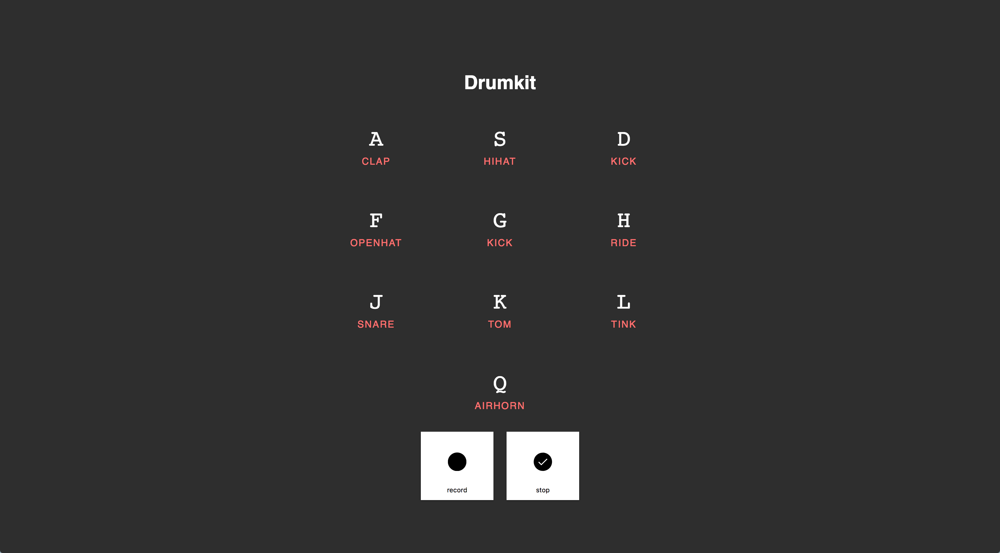

Sam
adventure
About
me

I'm a frontend student that has curiosuity for new web-technologies. At the momment I'm diving in bringing more motion and life into the web.
code
-
speech recog-
nition
node.js
This is an school assignment where I had to implenment real-time with sockets. It is a chat app with voice recognision. It will filter out f***, so you have a nice clean chat.
More
- Socket.IO
- JS SeechRecognition -
oba

node.js
An one week project that shows lost buildings from amsterdam.Features that were used in this poject. I would like to play abit more with MapboxGL, it looks very promising for in the future and displaying data.
More
- SPARQL
- MapboxGL -
browser-tech
Web Audio
With browser-tech we had to support older browsers. Feature dectection was one of our main priorities. What happens when you open this app on IE8? When Web Audio Api is supported in your browser you can record with the drumkit!
More